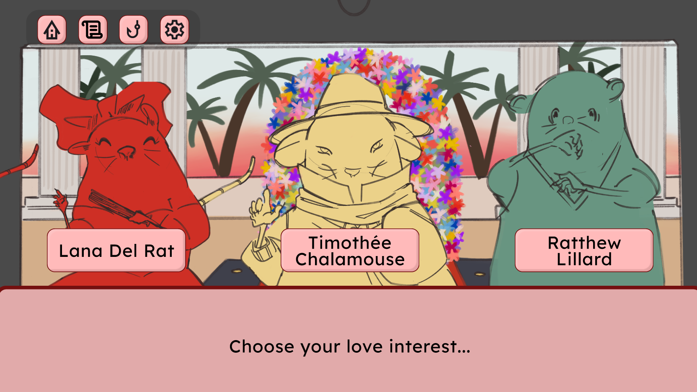
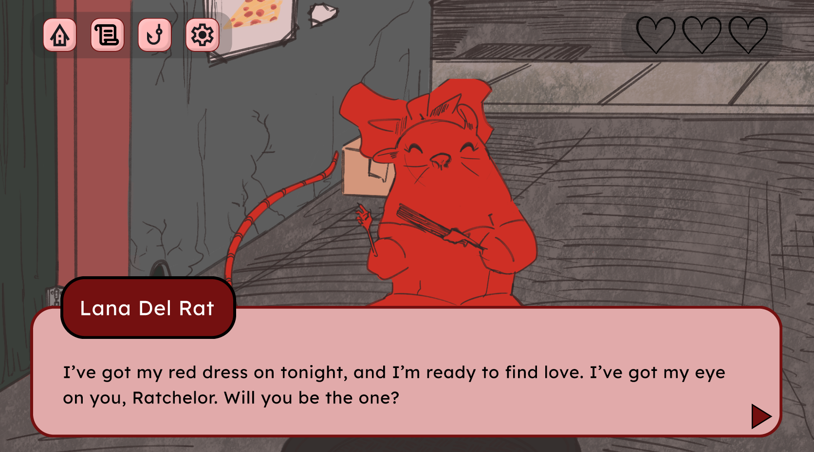
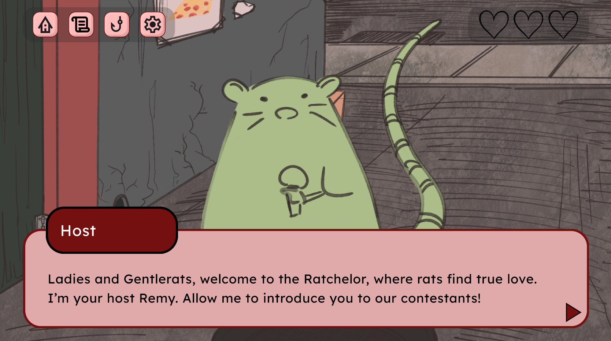
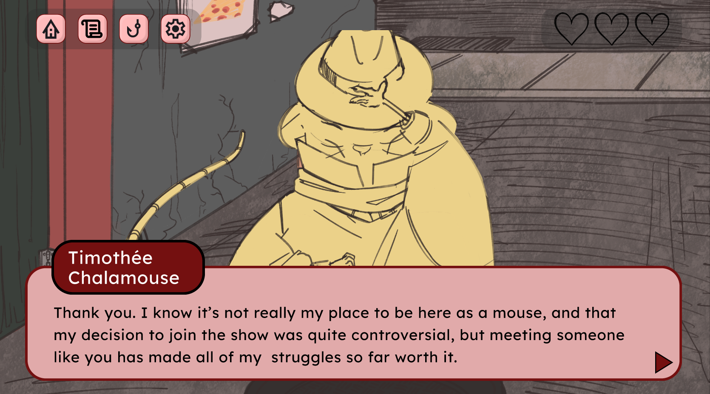
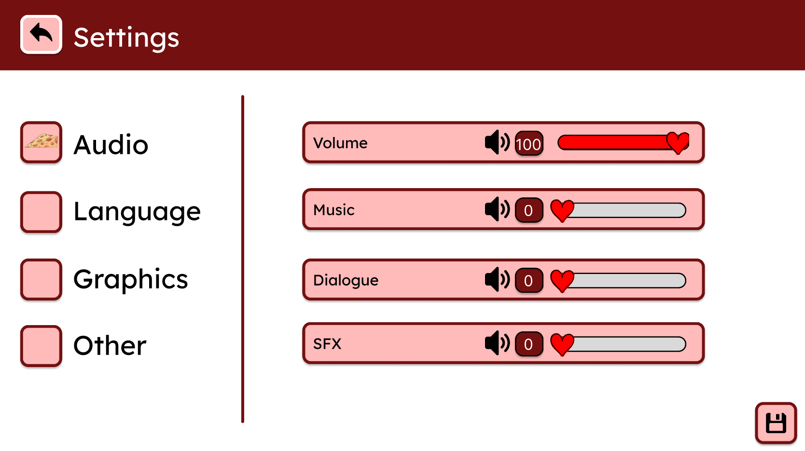

01
Rats!





"Rats!" only has a prototype as of right now, but my team and I have been actively discussing creating the project for real. We actually used to call it "The Ratchelor", but that game already exists! Who knew dating rats would be so popular? This prototype was created in Figma, and I worked on UI design and narrative. We also hosted multiple playtests and sent out multiple surveys in order to gather user data at all stages of production.
First, we gathered data to determine the details of the prototype experience we would create, figuring out our target audience and what they wanted out of a rat dating sim game. Throughout creating the prototype, we also had playtests to test how effective our UI design was as well as see how our target audience reacted to the concept. These playtests also helped us iron out some components that weren't working. After we created the prototype, we did playtests after to gauge our audience's reaction to the finished prototype, with a script made by yours truly.
Side note: Who knew that rodents would be such a reocurring theme in my work? I'm a cat person I swear!